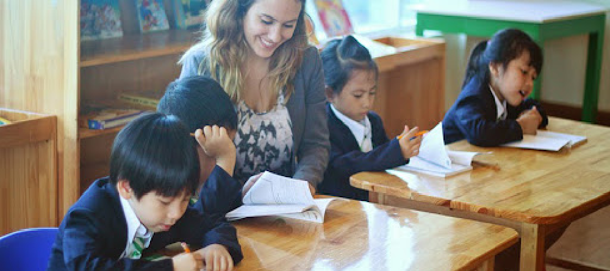

By Austinle | Dec 20, 2021 | Article

Directive 800/CT-BGDĐT clearly states that the academic year 2021-2022 is also the academic year that the whole education sector continues to perform dual tasks while actively implementing solutions to prevent and control the complicated development of the Covid-19 epidemic. complex, ensuring school safety, while trying to overcome difficulties to complete the school year's tasks, meet the requirements of innovation and ensure the quality of education and training.
To achieve the above goal, the Minister of Education and Training requested the entire education sector to focus on implementing the following key tasks:
→Firstly, proactively develop and implement a flexible plan for the 2021-2022 school year, in line with the local COVID-19 situation.
In particular, effectively implementing measures to prevent and control the Covid-19 epidemic, coordinate with the health sector to proactively develop scenarios and solutions to cope with the forecast that the Covid-19 epidemic may still occur. lengthy and complex.
Organizing the opening of the new school year flexibly in person or online depending on the local epidemic situation, ensuring safety, compactness, practicality, showing the spirit of sharing and encouraging students and students. teachers and staff overcome difficulties and complete teaching and learning tasks.
Make the most of the time to organize face-to-face teaching when the epidemic is under control. In case the epidemic is complicated, it is impossible to organize face-to-face teaching, then organize online teaching to complete the school year plan and ensure the quality of education. Do not organize online teaching for preschool education, focus on coordinating, guiding and supporting parents to nurture, care for and educate children at home according to appropriate channels.
Pay attention to the training and fostering of teachers with necessary skills to conduct online teachingand distance training; Review to cut down and maximize cost savings to maintain stability, not to increase tuition fees compared to the 2020-2021 school year;..
→ Second, focus on improving the quality of education. Based on the guidance on the school year's tasks of all levels, the education and training departments, and educational institutions shall develop and implement detailed and specific plans suitable to the actual conditions of the locality. there:
Implement the revised and supplemented preschool education program according to Circular No. 51/2020/TT-BGDDT dated December 31, 2020 and thematic "Building a child-centered preschool in the period 2021-2025” according to Plan No. 626/KH-BGDĐT; continue to effectively implement the Project on strengthening Vietnamese language for preschool children and primary school students in ethnic minority areas in the 2016-2020 period, with a vision to 2025.
Maintain and improve the quality of preschool education universalization for 5-year-old children, prepare 5-year-old children to be ready for grade 1; encourage localities with conditions to universalize preschool education for preschool children...
Organize the synchronous and effective implementation of Directive No. 14/CT-TTg dated May 25, 2021 of the Prime Minister and Decision No. 1373/QD-TTg dated July 30, 2021 of the Prime Minister approved the Project "Building a learning society in the period of 2021 - 2030". Develop a plan on career-oriented education and orient student flow in general education in an open direction.
→Third, synchronously implement solutions to improve training quality, contributing to improving the quality of human resources, especially high-quality human resources.
The organization effectively implements regulations on enrollment and training, sets standards for training programs for groups of disciplines and fields of training at all levels of higher education.
Promote scientific research, promote publication in prestigious international scientific journals, prioritize applied research and transfer, promote innovation and entrepreneurship; develop strong research groups, associated with investment in laboratory development and graduate training. Strengthen the accreditation of training programs and international cooperation, giving priority to the development of quality training programs
→Third, synchronously implement solutions to improve training quality, contributing to improving the quality of human resources, especially high-quality human resources.
Organize the implementation of Decision No. 209/QD-TTg dated February 17, 2020 of the Prime Minister. Review and evaluate the implementation and application of the law provisions on university autonomy, improve the operational efficiency of the University Council; consolidating the entire leadership apparatus, managing and perfecting the system of internal management documents, promoting democracy and improving school administration capacity.
The organization effectively implements regulations on enrollment and training, sets standards for training programs for groups of disciplines and fields of training at all levels of higher education.
Promote scientific research, promote publication in prestigious international scientific journals, prioritize applied research and transfer, promote innovation and entrepreneurship; develop strong research groups, associated with investment in laboratory development and graduate training. Strengthen the accreditation of training programs and international cooperation, giving priority to the development of quality training programs International quality taught in English.
→Fourthly, effectively implement the educational work of revolutionary ideals, political ideology, morality, lifestyle, life skills, career skills and jobs for pupils and students; continue to promote the study and following of Ho Chi Minh's thought, morality and style in education and training institutions;
Develop indicators to assess student outcomes in terms of ethics, lifestyle, life skills and physical development for each grade level. Pay special attention and have solutions to stabilize the psychology and ideology of students and students affected by the prolonged epidemic situation; strengthen school-family coordination in managing and supporting students, especially primary school students, in online learning at home.
Effectively deploying physical education and school health work, ensuring school safety; building a database on school health. Improve the quality of national defense and security education.
→Fifth, implement the Plan to implement the roadmap to raise the standard level of training of preschool, primary and junior high school teachers according to the provisions of Decree No. 71/2020/ND-CP dated 30/6/ 2020 of the Government.
Implement regular training, fostering to improve management and teaching capacity to meet the standards of principals, professional standards of teachers at all levels and implement the 2018 General Education Program. Advise competent authorities the right to supplement staff and recruit teachers, to ensure that "there must be a teacher for every student".
There are appropriate solutions to support teachers and employees in the education sector affected by the Covid-19 epidemic, especially teachers and employees working in non-public educational institutions.
→Sixth, prioritizing budget balance to invest in strengthening facilities, minimum teaching equipment to ensure the implementation of new programs for grades 1, 2, 6 and the 2018 General Education Program. .
Continue to implement the Project on ensuring material foundations for the preschool and general education program in the period 2017 - 2025; effectively integrate the national target program on building new rural areas for the period of 2021 - 2025, the national target program for socio-economic development in ethnic minority and mountainous areas in the period of 2021 - 2030, National Target Program on Sustainable Poverty Reduction in the 2021-2025 period to invest in facilities and teaching equipment for educational institutions.
Mobilize resources to invest in education and support students and students whose parents are employees whose contracts are suspended, unpaid leave, job stoppage, or job loss. ineligible for unemployment benefits, self-employed workers, no pupils or students cannot go to school because of economic conditions.
→Seventh, continue to perfect the institution, review, amend, supplement and replace legal documents and management documents that are no longer appropriate and overlapping; strengthen the decentralization of the grassroots level, coupled with the strengthening of inspection and examination, tightening discipline and discipline, improving the role and responsibility of the head, strictly handling violations .
Promote digital transformation in education and training, associated with innovation in management, innovation in teaching and learning methods. Strengthening information and communication work on new undertakings and policies of the sector and results of implementation of resolutions of the Party, National Assembly and Government on fundamental and comprehensive reform of education and training. ;
Organize the implementation of the emulation movement "Innovation and creativity in management, teaching and learning" to ensure practicality, efficiency and suitability with the actual conditions of the locality and unit; promptly reward and honor organizations and individuals that have innovative ideas, solutions and models in management, teaching and learning, especially in the context that the Covid-19 epidemic can still last for a long time.